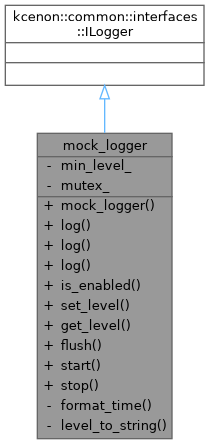
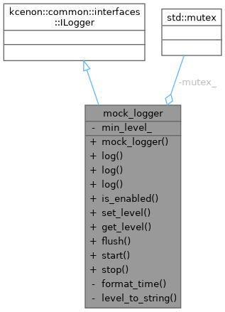
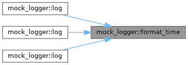
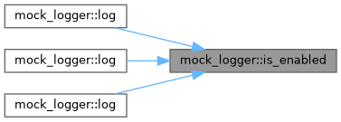
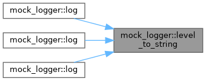
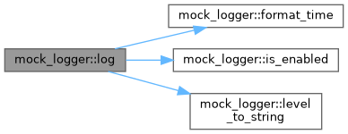

Mock logger implementation for demonstration. More...
#include <mock_logger.h>


Public Types | |
| using | log_level = kcenon::common::interfaces::log_level |
| using | log_entry = kcenon::common::interfaces::log_entry |
| using | VoidResult = kcenon::common::VoidResult |
| using | source_location = kcenon::common::source_location |
Public Member Functions | |
| mock_logger () | |
| VoidResult | log (log_level level, const std::string &message) override |
| VoidResult | log (log_level level, std::string_view message, const source_location &loc=source_location::current()) override |
| VoidResult | log (const log_entry &entry) override |
| bool | is_enabled (log_level level) const override |
| VoidResult | set_level (log_level level) override |
| log_level | get_level () const override |
| VoidResult | flush () override |
| void | start () |
| void | stop () |
Private Member Functions | |
| std::string | format_time () const |
| std::string | level_to_string (log_level level) const |
Private Attributes | |
| log_level | min_level_ |
| std::mutex | mutex_ |
Detailed Description
Mock logger implementation for demonstration.
Implements common::interfaces::ILogger for use in examples. In a real application, this would be replaced with logger_system.
- Note
- Issue #261: Updated to use common_system's ILogger interface.
Definition at line 23 of file mock_logger.h.
Member Typedef Documentation
◆ log_entry
| using mock_logger::log_entry = kcenon::common::interfaces::log_entry |
Definition at line 26 of file mock_logger.h.
◆ log_level
| using mock_logger::log_level = kcenon::common::interfaces::log_level |
Definition at line 25 of file mock_logger.h.
◆ source_location
| using mock_logger::source_location = kcenon::common::source_location |
Definition at line 28 of file mock_logger.h.
◆ VoidResult
| using mock_logger::VoidResult = kcenon::common::VoidResult |
Definition at line 27 of file mock_logger.h.
Constructor & Destructor Documentation
◆ mock_logger()
|
inline |
Definition at line 30 of file mock_logger.h.
Member Function Documentation
◆ flush()
|
inlineoverride |
Definition at line 107 of file mock_logger.h.
Referenced by stop().
◆ format_time()
|
inlineprivate |
Definition at line 123 of file mock_logger.h.
Referenced by log(), log(), and log().

◆ get_level()
|
inlineoverride |
Definition at line 103 of file mock_logger.h.
References min_level_.
◆ is_enabled()
|
inlineoverride |
Definition at line 94 of file mock_logger.h.
References min_level_.
Referenced by log(), log(), and log().

◆ level_to_string()
|
inlineprivate |
Definition at line 135 of file mock_logger.h.
Referenced by log(), log(), and log().

◆ log() [1/3]
|
inlineoverride |
Definition at line 72 of file mock_logger.h.
References format_time(), is_enabled(), level_to_string(), and mutex_.

◆ log() [2/3]
|
inlineoverride |
Definition at line 32 of file mock_logger.h.
References format_time(), is_enabled(), level_to_string(), and mutex_.

◆ log() [3/3]
|
inlineoverride |
Definition at line 47 of file mock_logger.h.
References format_time(), is_enabled(), level_to_string(), and mutex_.

◆ set_level()
|
inlineoverride |
Definition at line 98 of file mock_logger.h.
References min_level_.
◆ start()
|
inline |
Definition at line 113 of file mock_logger.h.
◆ stop()
|
inline |
Definition at line 117 of file mock_logger.h.
References flush().
Member Data Documentation
◆ min_level_
|
private |
Definition at line 140 of file mock_logger.h.
Referenced by get_level(), is_enabled(), and set_level().
◆ mutex_
|
mutableprivate |
Definition at line 141 of file mock_logger.h.
The documentation for this class was generated from the following file:
- examples/integration_example/mock_logger.h